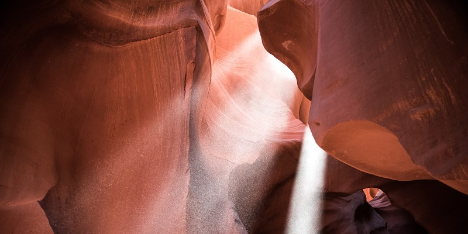
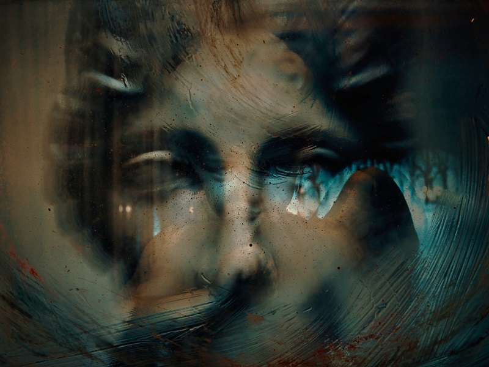
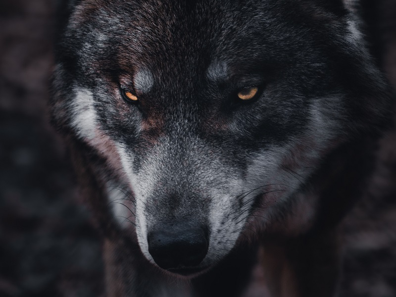

Neon Nightmares

General Plotlines

- The Big Spring:
- There are rumors running rampant amongst the Supernaturals of Vegas and the Mojave about a tremendously powerful caern/node hidden somewhere nearby.
- Everyone has a vested interest in finding it, especially to keep it out of the hands of their enemies (Technocracy, Nephandi, BSDs, Weaver, etc)
- Recent rumours led to an investigation of the fallen Garou sept to the North of Vegas. Little was learned beyond a haunting of malicious spirits and the loss/capture of Butch Levi.
- The Kachina:
- There is something happening out in the Mojave and it isn't exactly friendly to the supernaturals of the area.
- There is a connection with the remnants of one of the former indigenous tribal groups in the area around Vegas, but the exact nature of this connection is unknown.
- Something Wicked This Way Comes:
- There is something truly ominous happening in Vegas. Strange sightings of everything from Drones to Vampires to things even stranger encroaching on Vegas
- While not all are outright evil, many are unconcerned with the Alliance or its members and all have proven disruptive with their presence.
- Worse yet, all this increased activity has drawn the attention of the mortal authorities in the form of FIRSTLIGHT and their newly found allies within Project Twilight and the Society of Leopold.
Mage-Focused Plotlines

- A Crack in the Monolith:
- The Technocracy has become increasingly active in Vegas proper as of late, implying that their long standing war with the Black Spirals to be shfiting.
- The Cloud Room (center in Stratosphere Tower) has approached the Alliance with a pact of mutual aid against the hardliners at Nellis.
- Nellis has so far been silent, but everyone (the Cloud Room included) is nervous about waking the "sleeping giant."
- Red Rock Commune:
- Sarah, a powerful Verbena mage and leader of the Red Rock Commune, has made it clear that she is uninterested in joining the Alliance alongside her Tradition allies.
- She and her Commune is firmly dedicated to finding the Big Spring before anyone else can, with a goal of using its power to return to the Mythic Age before Science.
- One of her Lieutenants, Roger Tudinu, has proven to be more open minded and focused less on finding the Spring and more on safeguarding it.
- The Wild Talent:
- A beautiful and confident, if reckless, Mage has made her presence known in Vegas through her flagrant use of vulgar magic in public places. Her name is Sophia.
- She has spoken often of having 'escaped' from the Technocracy and having lost track of an ally (Gregory) who has been missing since her escape.
- She has shown obvious signs of not only being a powerful Mage, but also clearly has a strongly Technocratic paradigm. Further details are currently unknown.
- She has recently acquired the MGM Grand casino resort and has converted it to her own personal, Greek-themed casino named Logog Phronesis.
Shifter-Focused Plotlines

- The Dutchman:
- A potent Gaian caern has been found to the south of Vegas, in the northern stretches of Arizona. Little is known about its Patron beyond its potency.
- It has been revealed that the Dutchman has accepted all manner of Gaian Shifters, including many species of Fera who have taken up residence in or around it.
- It has also been discovered that the Dutchman has granted safe haven to Ronin Garou and the dreaded Skin Changers. No violence against either is tolerated by the caern's patron in the Dutchman's bawn.
- The Ghost Caern:
- When the Sept of Rippling Flame fell to the Black Spirals about five years ago, the old Caern was abandoned yet the BSDs have not claimed or destroyed it.
- Those who approach hear the distinct sounds of wailing winds and an unearthly chill hangs over the former Sept's bawn.
- Of those who have physically entered the decimated caern's territory, very few have returned. Those fortunate few tell tales of a harrowing attack by unseen enemies.
- Eco-Terrorism:
- There have been frequent signs of Black Spirals in and around the growing solar farms around the Mojave. Their purpose or intentions are currently unknown.
- There have been attacks on many polluting sites around the area that no Gaian has claimed and many more signs of intense sabotage in these sites.
- Current evidence indicates that this recent upswing in attacks is the direct result of a pack of Black Spirals who have taken particular interest in polluting sites in the area. Their ultimate goal is, as of yet, still unknown.